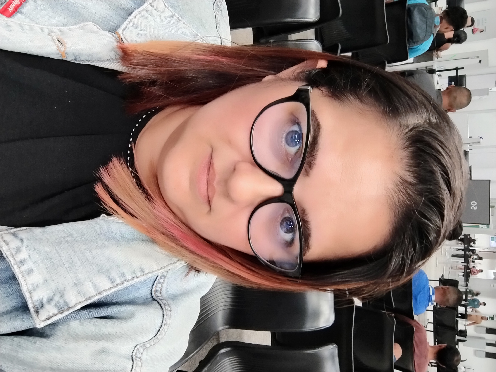
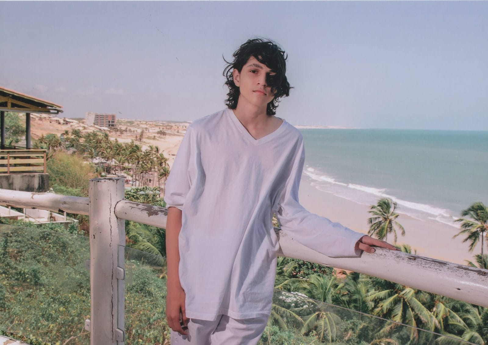
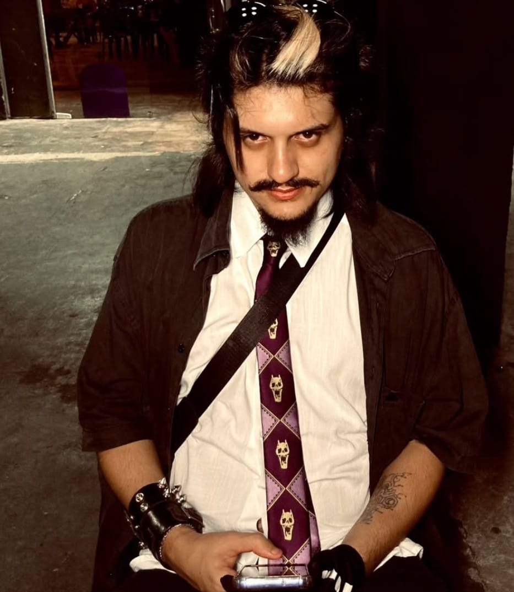

ARQUIVOS CONFIDENCIAIS • ACESSO LIBERADO
Costelinha & Slash: fofura, bagunça e cara de inocente!
Bem-vindo ao nosso diário! Aqui você acompanha cochilos suspeitos, crimes contra almofadas, tentativas de ganhar comida extra e muita cara de inocente.


Notícias urgentes da casinha
Tudo que aconteceu, quase aconteceu ou foi dramaticamente aumentado por dois doguinhos muito suspeitos.
Caso #001
🐾 Suspeita: 98%
O sumiço misterioso da almofada
Testemunhas afirmam ter visto Costelinha próximo ao local.

Annie Auriema
Caso #002
🚨 Procurado: 98%
Desaparecimento do último biscoito
Slash foi visto próximo ao pote vazio e recusou depoimento.

Carlos Júnior
Caso #003
🐾 Suspeita: 95%
O sushi proibido
Slash aproveitou um momento de distração da família e experimentou sushi com shoyu.

Alefe Andrade
Caso #004
🐾 Suspeita: 99%
O banho misterioso
Durante sua primeira visita à pet shop, Slash chorou até ser buscado depois do banho.
Arlyson Andrade